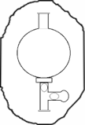
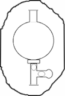

Determination of Fluoride in Water
Objective:
To determine Fluoride concentration in the given water sample by Ion Selective Method.
Apparatus used:
Ion Selective Electrode (ISE) meter, Fluoride Ion Selective Electrode, Magnetic stirrer with TFE-coated stirring bracket, Beaker, Pipette.
Solutions used Standard Fluoride solution, Fluoride buffer (TISAB-Total Ionic Strength Adjusting Buffer) solution, Distilled water, Water sample DescriptionFluoride is found naturally in soil, water, and foods. It is also produced synthetically for use in drinking water, toothpaste, mouthwashes and various chemical products.


Preparation of Fluoride Standards
Prepare a series of standards by diluting 2.5, 5.0, 10.0ml of standard Fluoride solution to 100ml with ditilled water.


 


Press the up arrow on the bulb to take 2.5ml of Fluoride solution up into the pipette
Press the down arrow on the bulb to release Fluoride solutioninto the flask
Dilute the solution by adding distilled water upto 100ml mark
2.5ml
Take 25ml of sample in a 100ml beaker.
Press the up arrow on the bulb to take sample up into the pipette
Press the down arrow on the bulb to release sample into the flask
Sample Solution
Add 25ml of TISAB to same beaker.
Press the up arrow on the bulb to take TISAB solution up into the pipette
Press the down arrow on the bulb to release TISAB solution into the flask
Sample Solution
Amount of TISAB taken should be equal to the amount of sample taken and the total volume should be sufficient to immerse the ISE sensor.
Calibration of Ion Selective Electrode Meter
Clean the electrode with the distilled water and dry it using tissue paper.


Dry the electrodes using tissue paper.
Place the beaker with 2.5ml Fluoride solution on a stirring plate and add a magnetic stirring bar. Then dip the Fluoride ISE in the solution.


Add a magnetic stirring bar in the beaker.
Stop the stirrer after getting accurate value
Clean the electrode with the distilled water and dry it using tissue paper.
Dry the electrodes using tissue paper.
Place the beaker with 5.0ml Fluoride solution on a stirring plate and add a magnetic stirring bar. Then dip the Fluoride ISE in the solution.
0.000
Add a magnetic stirring bar in the beaker.
Stop the stirrer after getting accurate value
Clean the electrode with the distilled water and dry it using tissue paper.
Dry the electrodes using tissue paper.
Place the beaker with 10.0ml Fluoride solution on a stirring plate and add a magnetic stirring bar. Then dip the Fluoride ISE in the solution.
0.000
Add a magnetic stirring bar in the beaker.
Stop the stirrer after getting accurate value
Determination of Fluoride Concentration in Water Sample
Clean the electrode with the distilled water and dry it using tissue paper.
Dry the electrodes using tissue paper.
Place the beaker with water sample on a stirring plate and add a magnetic stirring bar. Then dip the Fluoride ISE in the solution.
0.000
Add a magnetic stirring bar in the beaker.
Stop the stirrer after getting accurate value
Observations:
Concentration of Fluoride in the given water sample = ______________
Inference:
What is the acceptable limit of Fluoride in drinking water?
<1mg/l 1mg/l - 5mg/l 5mg/l - 7mg/l >7mg/l